Controller Design
sysID; [A,B,C,D] = tf2ss(cell2mat(G_comp.Numerator),cell2mat(G_comp.Denominator)) eigen_values = eig(A)
Warning: Ignoring extra legend entries.
G =
1.342e07 s^6 + 3.938e10 s^5 + 3.42e16 s^4 + 5.328e19 s^3 + 1.854e25 s^2
+ 1.088e28 s + 1.928e33
---------------------------------------------------------------------------
s^8 + 3199 s^7 + 2.738e09 s^6 + 4.857e12 s^5 + 1.656e18 s^4 + 1.219e21 s^3
+ 2.091e26 s^2 + 2.136e28 s + 1.905e33
Continuous-time identified transfer function.
Parameterization:
Number of poles: 8 Number of zeros: 6
Number of free coefficients: 15
Use "tfdata", "getpvec", "getcov" for parameters and their uncertainties.
Status:
Estimated using TFEST on frequency response data "sys".
Fit to estimation data: 99.9%
FPE: 2.326e-06, MSE: 2.323e-06
char =
'\frac{\frac{3603061052953437\,s^6}{268435456}+\frac{5133228042542267\,s^5}{131072}+34201960011978316\,s^4+53190017306428194816\,s^3+18535717911085316239785984\,s^2+10881908091434080772873519104\,s+1928359649544455558686253089030144}{s^8+\frac{7034612434488761\,s^7}{2199023255552}+\frac{5741166758948537\,s^6}{2097152}+\frac{2486760026298577\,s^5}{512}+1656442354377754880\,s^4+1218871679859894779904\,s^3+209140172229026439596343296\,s^2+21356621499507234816277872640\,s+1904834843397118558787398335987712}'
A =
1.0e+33 *
Columns 1 through 7
-0.0000 -0.0000 -0.0000 -0.0000 -0.0000 -0.0000 -0.0000
0.0000 0 0 0 0 0 0
0 0.0000 0 0 0 0 0
0 0 0.0000 0 0 0 0
0 0 0 0.0000 0 0 0
0 0 0 0 0.0000 0 0
0 0 0 0 0 0.0000 0
0 0 0 0 0 0 0.0000
Column 8
-1.9048
0
0
0
0
0
0
0
B =
1
0
0
0
0
0
0
0
C =
1.0e+33 *
Columns 1 through 7
0 0.0000 0.0000 0.0000 0.0000 0.0000 0.0000
Column 8
1.9284
D =
0
eigen_values =
1.0e+04 *
-0.0822 + 4.3982i
-0.0822 - 4.3982i
-0.0498 + 2.5127i
-0.0498 - 2.5127i
-0.0251 + 1.2564i
-0.0251 - 1.2564i
-0.0028 + 0.3141i
-0.0028 - 0.3141i
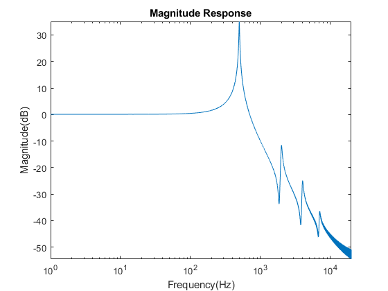 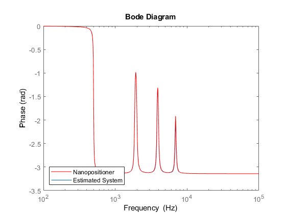 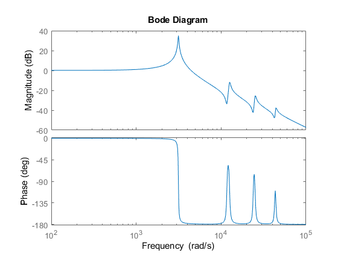 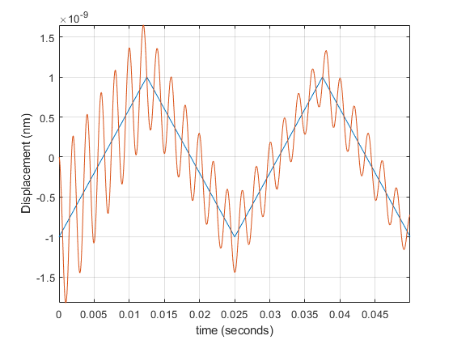 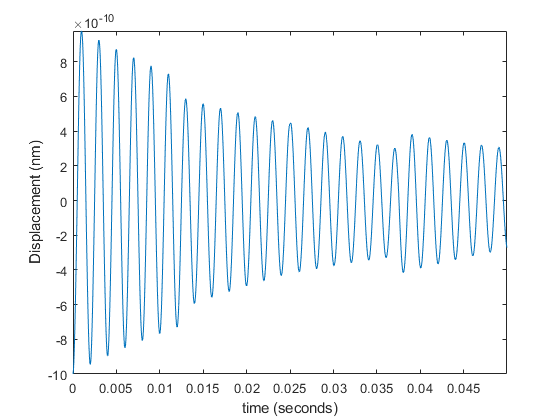 figure pzmap(G_comp)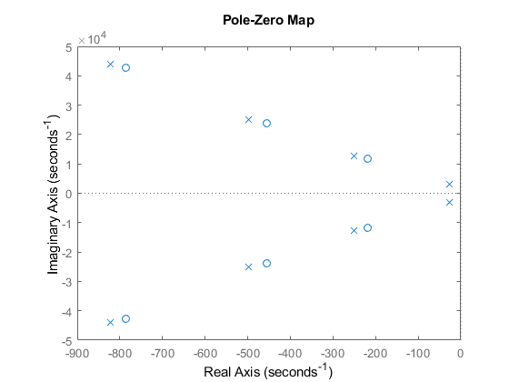
Steps to Designing an Integral Resonant Controller
- Determine the required feed-through term that induces a zero at a frequency lower than the first dominant resonant mode of the system.
- Designing a simple integrator to dampen the first resonant mode and maximize damping ratio
- Designing a tracking controller to minimize the gain to 1
Following on from Lemma 2 [1]
Feedthrough term, d can be selected as : 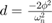
G4
G4 =
9.87e06
-----------------------
s^2 + 55.29 s + 9.87e06
Continuous-time transfer function.
d = -2*(9.87e06^2)/(9.87e06^2)
d =
-2
G_df = G_comp + d
G_df =
-2 s^8 - 6398 s^7 - 5.462e09 s^6 - 9.675e12 s^5 - 3.279e18 s^4
- 2.385e21 s^3 - 3.997e26 s^2 - 3.183e28 s - 1.881e33
---------------------------------------------------------------------------
s^8 + 3199 s^7 + 2.738e09 s^6 + 4.857e12 s^5 + 1.656e18 s^4 + 1.219e21 s^3
+ 2.091e26 s^2 + 2.136e28 s + 1.905e33
Continuous-time transfer function.
figure pzmap(G_comp) figure pzmap(G_df)
 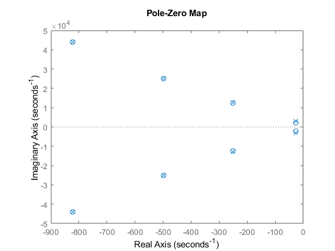
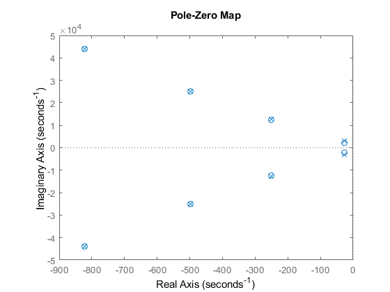 figure rlocus(G4 + d)

Damping Controller Design
wn = sqrt(9.87e06); kd = (1/abs(d))*wn*sqrt(wn/sqrt(9.87e06 + (9.87e06/-2))); C_damp = tf(kd,[1,1])
C_damp = 1868 ----- s + 1 Continuous-time transfer function.
Inner Damping Loop Transfer Function and Simulation
%G_damp = feedback(G_df*C_damp,+1)
G_damp = C_damp*G_comp/(1-(C_damp*G_df))
G_damp =
2.507e10 s^15 + 1.534e14 s^14 + 1.328e20 s^13 + 6.259e23 s^12
+ 2.517e29 s^11 + 8.654e32 s^10 + 2.101e38 s^9 + 4.939e41 s^8
+ 8.085e46 s^7 + 1.157e50 s^6 + 1.336e55 s^5 + 9.584e57 s^4
+ 8.198e62 s^3 + 1.165e65 s^2 + 6.862e69 s + 6.862e69
------------------------------------------------------------------------
s^18 + 1.014e04 s^17 + 5.509e09 s^16 + 4.771e13 s^15 + 1.094e19 s^14
+ 8.001e22 s^13 + 9.667e27 s^12 + 5.948e31 s^11 + 3.994e36 s^10
+ 2.058e40 s^9 + 7.277e44 s^8 + 3.154e48 s^7 + 5.223e52 s^6
+ 1.875e56 s^5 + 8.386e59 s^4 + 2.242e63 s^3 + 3.819e66 s^2
+ 6.702e69 s + 6.698e69
Continuous-time transfer function.
bode(G_damp)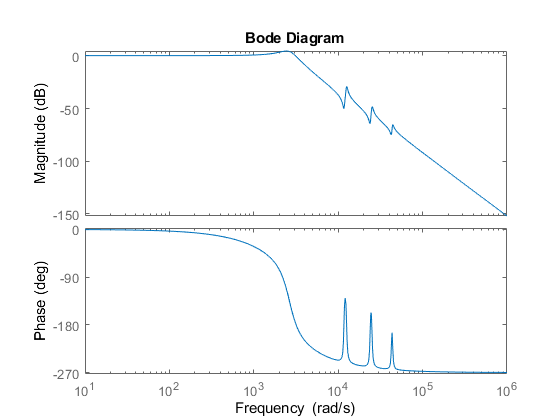
x = 1e-9*sawtooth(2*pi*40*t,1/2); x_model = lsim(G_damp,x,t); figure plot(t,x,t,x_model) axis('tight') grid on ylabel('Displacement (nm)') xlabel('time (seconds)')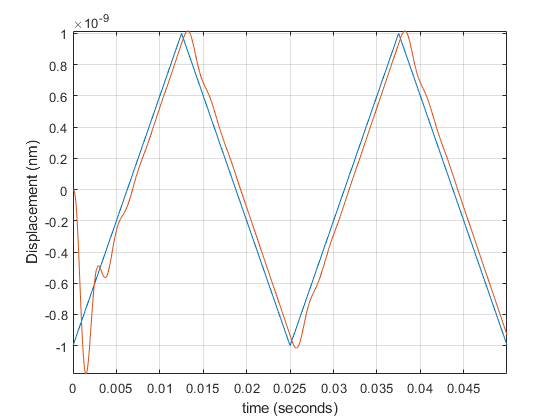
Tracking Controller
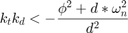
kt = - (9.87e06 + d*9.87e06)/(d^2); C_track = -tf(kt,[1,1])
C_track =
-2.468e06
---------
s + 1
Continuous-time transfer function.
G_damp_irc = C_damp*G_df/(1-C_damp*G_df); G_close = C_track*G_damp_irc/(1 + C_track*G_damp_irc); bode(G_close)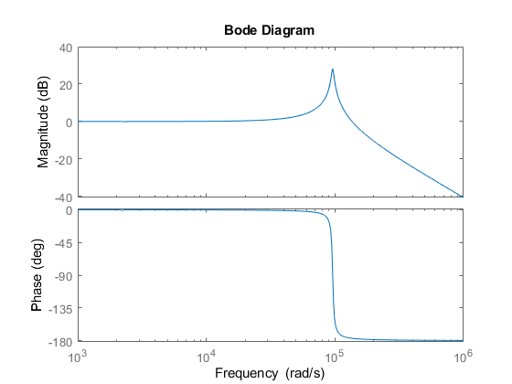
x = 1e-9*sawtooth(2*pi*40*t,1/2); x_model = lsim(G_close,x,t); figure plot(t,x,t,x_model) %axis('tight') grid on ylabel('Displacement (nm)') xlabel('time (seconds)') legend('Real', 'IRC') error = x-x_model'; figure plot(t,error) axis('tight') ylabel('Displacement (nm)') xlabel('time (seconds)')
Warning: The input signal is undersampled. Use a sampling period smaller than 1.5e-05.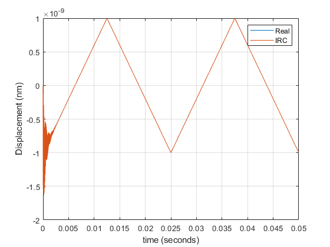 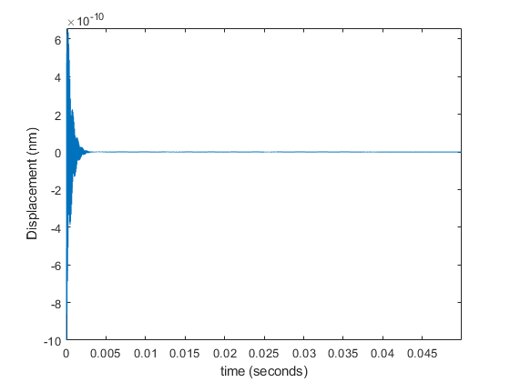